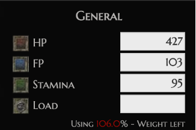
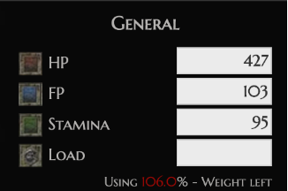

5. Optimierung#
In diesem Kapitel wird die Optimierung auf logischer Ebene betrachtet. Es geht mehr um die Daten selbst als um die Speicherabbildung.
5.1. Wiederholung: Anfragebearbeitung#
Zunächst eine kleine Wiederholung zur Anfragebearbeitung in Bezug auf das Grundproblem und den Ablauf.
5.1.1. Grundproblem#
Anfragen in SQL und der Relationalen Algebra sind deklarativ. Solche Anfragen müssen in ausführbare (prozedurale) Form transformiert werden. Also in echte ausführbare Programme. Die Ziele dabei sind ein “QEP” (prozeduraler Query Execution Plan) und Effizienz. Eine Anfrage soll schnell und wenige Ressourcen verbrauchen (CPU, I/O, RAM, Bandbreite).
5.1.2. Ablauf der Anfragebearbeitung#

Parsing Als erstes wird die Anfrage geparsed und überprüft, ob diese syntaktisch korrekt ist. Danach werden die Elemente semantisch überprüft und ein Parsebaum erstellt.
Wahl des logischen Anfrageplans Im zweiten Schritt werden exponentiell viele Bäume mit logischen Operatoren erstellt. Darunter wird der optimale Plan ausgewählt, indem vorher logisch, regelbasiert und kostenbasiert optimiert wird.
Wahl des physischen Anfrageplans Anhand des logischen Plans wird ein ausführbares Programm mit physischen Operatoren erstellt. Das Programm enthält Algorithmen und Scan-Operatoren. Der optimale Plan wird physisch optimiert und dann ausgewählt. Zum Schluss wird der ausgewählte Anfrageplan ausgeführt.
{kind=link}
5.2. Ablauf der Anfragebearbeitung#
Die einzelnen Schritte bei der Anfragebearbeitung werden nun genauer betrachtet.
5.2.1. Parsing#

Beginnend beim Parsing wird auf syntaktische Korrektheit überprüft. Dafür wird eine Grammatik für einen Teil von SQL betrachtet. (SFW steht für SelectFromWhere):
Anfragen
<Anfrage> :: = <SFW>
<Anfrage> :: = ( <SFW> )
die Mengenoperatoren fehlen
SFWs
<SFW> ::= SELECT <SelListe> FROM <FromListe> WHERE <Bedingung>
die Gruppierung, Sortierung etc. fehlen
Listen
<SelListe> ::= <Attribut>, <SelListe>
<SelListe> ::= <Attribut>
<FromListe> ::= <Relation>, <FromListe>
<FromListe> ::= <Relation>
Bedingungen
<Bedingung> ::= <Bedingung> AND <Bedingung>
<Bedingung> ::= <Tupel> IN <Anfrage>
<Bedingung> ::= <Attribut> = <Attribut>
<Bedingung> ::= <Attribut> LIKE <Muster>
<Tupel>, <Attribut>, <Relation> und <Muster> sind nicht durch eine grammatische Regel definiert
Die vollständige Grammatik kann man zum Beispiel hier finden.
Anschließend wird während der Übersetzung die semantische Korrektheit überprüft. Beantwortet werden dabei generell Fragen wie:
Existieren die Relationen und Sichten der FROM Klausel?
Existieren die Attribute in den genannten Relationen? Sind sie eindeutig?
Sind die Typen für die Vergleiche korrekt?
Ist die Aggregation korrekt?
5.3. Algebraische Transformationsregeln#

Das Ziel ist es aus dem Parsebaum einen logischen Anfrageplan zu erstellen. Ohne die Semantik der Anfrage zu ändern, soll sie in eine interne Darstellung verwandelt werden. Um die Anfrage effizienter auszuführen, sollen insbesondere kleine Zwischenergebnisse erzielt werden. Am Ende sollen es äquivalente Ausdrücke sein. Zwei Ausdrücke der relationalen Algebra heißen äquivalent, falls sie die gleichen Operanden (=Relationen) nutzt und für jede mögliche Instanz der Datenbank stets die gleiche Antwortrelation ausgibt.
5.3.1. Kommutativität und Assoziativität#
Die Gesetze gelten jeweils für Mengen und Multimengen. Die verwendeten Ausdrücke können in beide Richtungen verwendet werden.
? ist kommutativ und assoziativ
R ? S = S ? R
(R ? S) ? T = R ? (S ? T)
∪ ist kommutativ und assoziativ
R ∪ S = S ∪ R
(R ∪ S) ∪ T = R ∪ (S ∪ T)
∩ ist kommutativ und assoziativ
R ∩ S = S ∩ R
(R ∩ S) ∩ T = R ∩ (S ∩ T)
⨝ ist kommutativ und assoziativ
R ⨝ S = S ⨝ R
(R ⨝ S) ⨝ T = R ⨝ (S ⨝ T)
5.3.2. Weitere Regeln#
Für Selektionen und Projektionen gelten die folgenden Regeln:
Selektion σ
- \[σ_{c1 AND c2}(R) = σ_{c1}(σ_{c2}(R))\]
- \[σ_{c1 OR c2}(R) = σ_{c1}(R) ∪ σ_{c2}(R)\]
nicht bei Multimengen
- \[ σ_{c1}(σ_{c2}(R)) = σ_{c2}(σ_{c1}(R))\]
- \[ σ_{c}(R Φ S) ≡ (σ_{c}(R)) Φ (σ_{c}(S))\]
Φ ∈ {∪, ∩, -, ⨝}
- \[ σ_{c}(R Φ S) ≡ (σ_{c}(R)) Φ S\]
Φ ∈ {∪, ∩, -, ⨝}
Falls sich c nur auf die Attribute in R bezieht.
Projektion π
- \[π_{L}(R ⨝ S) = π_{L}(π_{M}(R) ⨝ π_{N}(S))\]
- \[π_{L}(R ⨝_{C} S) = π_{L}(π_{M}(R) ⨝_{C} π_{N}(S))\]
- \[π_{L}(R x S) = π_{L}(π_{M}(R) x π_{N}(S))\]
- \[π_{L}(σ_{c}(R)) = π_{L}(σ_{c}(π_{M}(R))\]
5.4. Logische Anfragepläne#

Um nun zu einem logischen Anfrageplan zu gelangen, benötigt es zwei Schritte.
5.4.1. Zwei Schritte#
Schritt 1 In Schritt 1 wird der Parsebaum in einen Ausdruck der relationalen Algebra übersetzt und dann wieder als Baum dargestellt. Unter anderem werden auch Subanfragen aufgelöst. Letzteres wird aber nicht in dieser Vorlesung weiter thematisiert.
Schritt 2 Der Baum wird im zweitem Schritt gemäß der Transformationsregeln umgeformt. Man kann auch “Vor-Optimierungen” mittels Heuristiken durchführen. Dazu zählt unter Anderem:
das Pushen von Selektionen,
das Einbauen und Pushen von Projektionen,
das Zusammenfügen von Selektion und Kreuzprodukt zu einem Join,
die Gruppierung von Vereinigungen und Joins,
und eventuell das Verschieben und Einbauen von Duplikateliminierungen.
5.4.2. Beispiel - Anfragebearbeitung#
In diesem Beispiel ist ein Ausdruck der relationalen Algebra in einem Parsebaum dargestellt. Die zugehörige SQL-Anfrage wäre
SELECT Nachname
FROM mitarbeiter m, projekte p
WHERE p.Budget < 40000
AND m.p_id = p.p_id;
Man sollte damit beginnen das Kreuzprodukt mit der Selektion zu einem Join zu kombinieren.

Als nächstes sollte man versuchen die andere Selektion weiter nach unten zu pushen (Push-Down). Ziel ist es mit möglichst wenigen Tupeln in jedem Teilschritt zu arbeiten. Die gegebene Selektion kann direkt vor die Projekt-Relation geschoben werden.

In einem weiterem Schritt können die benötigten Attribute aus den Ausgangsrelationen direkt rausprojiziert werden.

5.4.3. Übergang zum Physischen Anfrageplan#
Hierbei gibt es diverse Freiheitsgrade:
Die Reihenfolge und Gruppierung von assoziativen und kommutativen Operatoren können vertauscht werden. Das ist zum Beispiel der Fall bei Joins, Vereinigungen und Schnittmengen.
Für jeden Operator kann ein Algorithmus gewählt werden. Damit sind die aus dem vorherigen Kapitel kennengelernten Hash-basierten, Sort-basierten oder auch One-Pass Algorithmen gemeint.
Es können zusätzliche Operatoren (Sort und Projektion), die im logischen Plan selbst nicht auftauchen, hinzugefügt werden.
Außerdem kann der Modus des Datentransports zwischen den Operatoren gewählt werden. Modi wären eine temporäre Tabelle oder eine Pipeline mit Iterator.
Dafür braucht man in jedem Fall zunächst eine Kostenabschätzung. Man möchte herausfinden, wann es sinnvoll ist, welche Operationsreihenfolgen zu nutzen und wie viel ein Plan gesamt kostet.
5.5. Kostenmodell#
Beim Kostenmodell werden die Kardinalitäten abgschätzt. Man möchte wissen wie viele Tupel es gibt und wie viele unterschiedliche Werte in den einzelnen Attributen einer Relation vorhanden sind.

5.5.1. Kostenbasierte Optimierung (Wiederholung)#
Konzeptionell werden alle denkbaren Ausführungspläne generiert. Die Kosten für jeden Plan werden anhand eines Kostenmodells bewertet. Dazu werden Statistiken und Histogramme hinzugezogen. Die Parameter werden anhand der Rechnerarchitektur, auf der die Datenbank aufgesetzt ist, kalibriert. Die Optimierung ist abhängig vom verfügbaren Speicher. Dann wird anhand des Aufwands-Kostenmodell geschaut was und wie optimiert werden soll. Entweder Durchsatz maximierend oder nicht Antwortzeit-minimierend. Entsprechend wird der günstigste Plan ausgeführt. Wichtig ist, dass nicht zu lange optimiert wird, da sich sonst der ganze Aufwand nicht lohnen könnte.
{kind=link}
5.5.2. Problemgröße (Suchraum) (Wiederholung)#
Wie zuvor erwähnt, werden konzeptionell alle denkbaren Ausführungspläne generiert. Man berechnet nun die Bushy-Pläne mit n Tabellen. Bushy-Plan bedeutet, dass der Baum immer balanciert ist.
n |
\(2^n\) |
n! |
\(\frac{(2(n-1))!}{(n-1)!}\) |
|---|---|---|---|
2 |
4 |
2 |
2 |
5 |
32 |
120 |
1680 |
10 |
1024 |
3628800 |
1,76 * 10^10 |
20 |
1048576 |
2,4 * 10^18 |
4,3 * 10^27 |
Die Anzahl der Deep-Pläne mit n Tabellen ist n!. Die Plankosten unterscheiden sich um viele Größenordnungen. Das Optimierungsproblem ist NP-hard (NP-Schwer).
Folie: Prof. Alfons Kemper, TU München.
5.5.3. Kostenmodell (Wiederholung)#
Gegeben ist ein algebraischer Ausdruck z.B. ein Anfrageplan. Das Kostenmodell schätzt die Ausführungskosten für diesen Ausdruck. Im Kostenmodell werden Punkte wie die Indexinformationen, die Ballungs-Informationen (Clustering on disk), die DB-Kardinalitäten und die Attributverteilungen berücksichtigt.
{kind=link}
20:10
5.5.4. Statistiken (Wiederholung)#


{kind=link}


{kind=link}


 

{kind=link}


{kind=link}


{kind=link}


{kind=link}